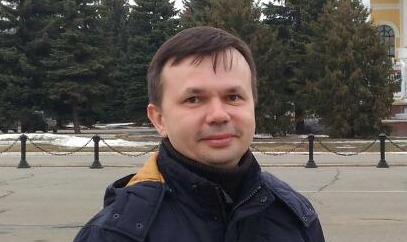

Контакты
Меня зовут Давид Сорокин. Я живу в Йошкар-Оле, столице Республики Марий Эл.

Являюсь автором платформы имитационного моделирования Aivika. У меня высшее образование по специальности прикладная математика. Закончил с отличием Марийский государственный университет в 1997 году, город Йошкар-Ола. В течение долгого времени работаю в качестве профессионального разработчика компьютерных программ.
Вы можете написать мне по адресу: david.sorokin@gmail.com.